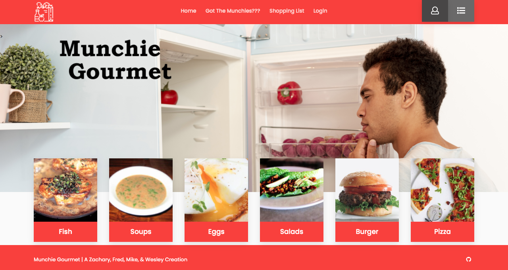
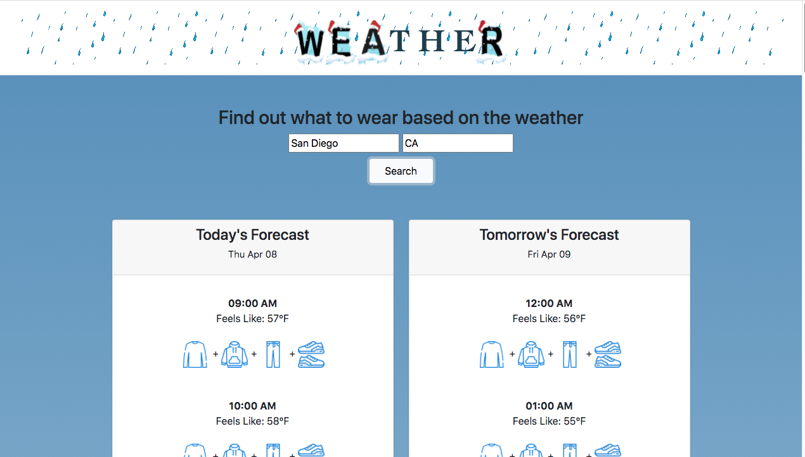

Wesley Kolar
I am an ambitious software engineer with a passion for learning and creating.
About Me
Hello, my name is Wesley Kolar. I am junior software engineer with experience in several programming languages, and eager to learn more in this ever-changing, growning, and improving tech world. I have a thorough understanding of the processes required for realising a successful web project from start to finish and with prior military experience, I work well under pressure and learn quickly in any environment.
Core Values
I am dedicated to team work and attention to detail, as well as passionate about social justice and inclusivity.
E-mail: wrkolar@gmail.com
View my resume.
Software development Skills
Debugging, JavaScript, Python, Node.js, Express, Redux, , PostgreSQL, Sequelize, Bootstrap, Flexbox AWS, HTML, CSS, Mongodb.
| Recent Projects |
Munchie Gourmet
For this project, I was a member of a 4-person development team building a website in which a user can select a few ingredients they have in their kitchen, and the program returns recipe suggestions as well as helps the user curate a shopping list.

Live Link | | Github Repository
Weather Wear
For this project, I was a member of a 3 person development team building an app for users to get hour by hour apparel recommendations based on the weather in their selected location.
 Live Link | | Github Repository